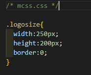

이제 본 WEB에서 어떻게 CSS를 사용하여 WEB을 구성했는지 보며 CSS 사용예제를 파악해보도록 하자. 먼저 인라인 스타일 시트의 사용 예시부터 보자.
<img src="Image/Logo/logo_no.png" alt="logo" style="width:250px;height:200px;border:0"> 위의 태그는 현재 WEB의 좌상단에 위치한 로고를 삽입하는데 쓰인 태그이다. 자세한 위치와 연결된 문서등은 다른 태그에서 적용되었고 상단의 태그에서의 스타일은 이미지의 사이즈를 어떻게 지정할지에 대해서만 작성되었다. 보다시피 스타일에 대한 속성들이 정의되어 있지만 한번만 사용될 수 있고 재활용하여 또 쓰기가 어렵다. 그렇다면 저 스타일을 내장 스타일 시트로 적용하려면 어떻게 해야 될까? 어렵지 않다 문서의 head 부분에 예를 들어 .logosize{width:250px;height:200px;border:0}라고 작성한 뒤에 img 태그 내에서 style="logosize"가 아닌, class="logosize"로 작성해주면 똑같이 적용된다. 이렇게 인라인 스타일 시트에서 내장 스타일 시트로 적용하게 된다면 동일한 이미지를 현재 웹에서 여러군데에 표시해야 할 경우 저렇게 길게 스타일에 대한 속성을 정의해줄 필요 없이 logosize 하나 삽입하는것으로 끝낼 수 있고, 스타일을 수정할 때에도 일일히 수정해줄 필요없이 .logosize의 선언부만 변경하는 것으로 쉽게 모든 스타일을 변경할 수 있게 된다. 하지만 예시로 든 로고의 경우 어차피 현재 웹에서 페이지당 한번만 사용되니 인라인과 내장의 차이가 태그내에 문장의 길이 외엔 없다고 볼 수 있다. 거기에 내장 스타일 방식의 경우 웹마다 .logosize 선언을 해줘야 하니 어쩌면 인라인 방식보다 더 번거롭다고 볼 수도 있다. 그렇다면 이렇게 로고 같이 무조건 사용되지만 한번씩만 사용되는 경우엔 어떻게 하면 좋을까? 바로 이때 사용 하는 방식이 외장 스타일 시트 방식이라고 할 수 있다. head부분에 정의된 .logosize를 본 WEB에서 사용중인 CSS 파일인 mcss.css에 작성한다.  이후 적용 방법은 내장 스타일 방식과 똑같다. 하지만 저렇게 CSS파일에 한번 정의해두면 이후 동일한 이미지 스타일을 정의하려 할 때 언제든지 class="logosize"로 간단하게 스타일을 정의할 수 있다. 이외에 사용된 CSS의 예시를 살펴보도록 하자. .m-tiny{font-size:10px!important}.m-small{font-size:12px!important}.m-medium{font-size:15px!important} .m-large{font-size:18px!important}.m-xlarge{font-size:24px!important}.m-xslarge{font-size:30px!important} .m-xxlarge{font-size:36px!important}.m-xxxlarge{font-size:48px!important}.m-jumbo{font-size:64px!important} 이 구문들은 글씨의 크기를 편하게 정하기 위해 정의해놓은 CSS 구문이다. 글씨크기를 편하게 통일하고, 여러 사이즈로 넣어보며 테스트 해보고 할필요 없이 간단하게 조정이 가능해진다. .active{font-weight: bold;} .last{border-right : none;} 이 구문들은 상단의 "CSS란?"과 "CSS 사용 예시"에서의 navmenu에 사용된 스타일인데, active는 현재 해당 되는 페이지의 메뉴를 bold처리해주는 것이고 last는 마지막 메뉴에 last 속성을 부여해주면 오른쪽 테두리 선을 표시하지 않는 스타일이다. 보다시피 스타일 선언이 짧아지는 장점도 있지만, 본인처럼 여러 페이지의 웹을 작성할 때 간단하게 원하는 속성을 부여할 수 있다는 장점이 있다.